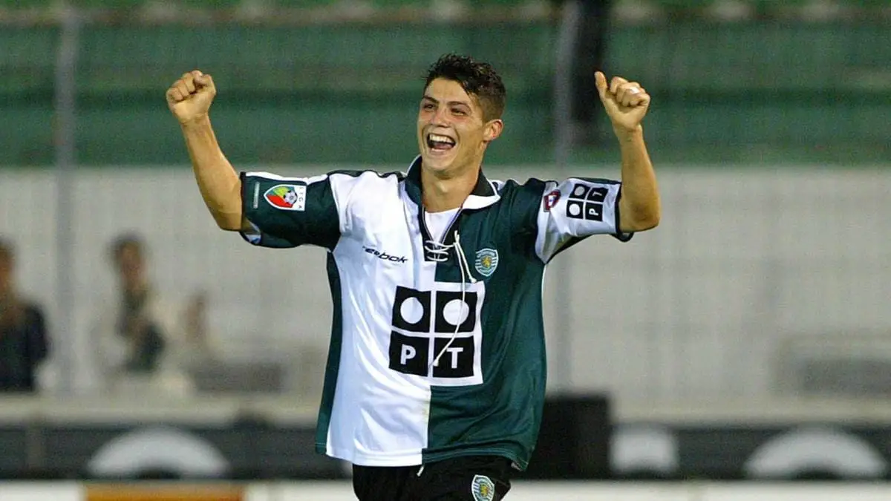
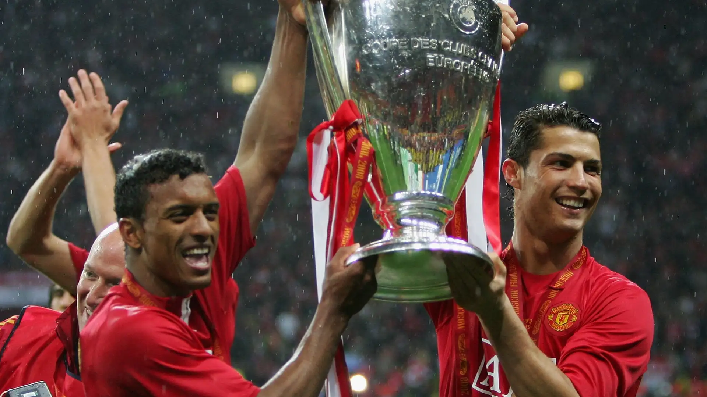
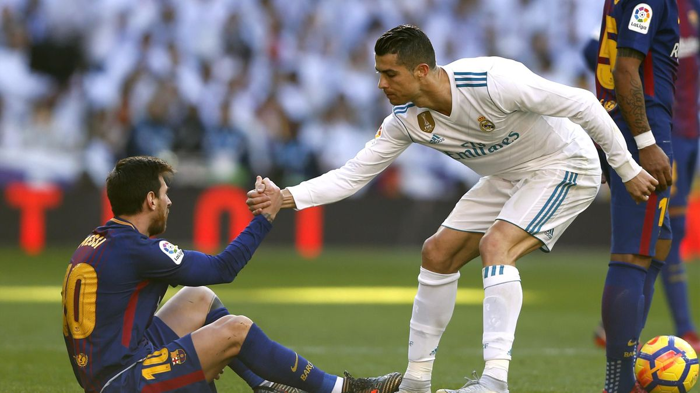
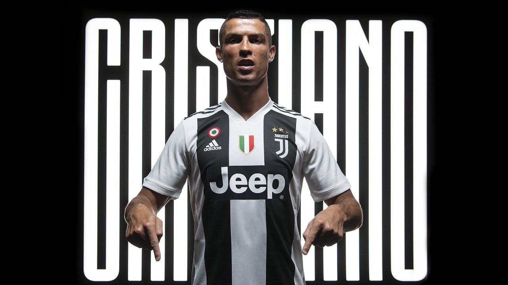
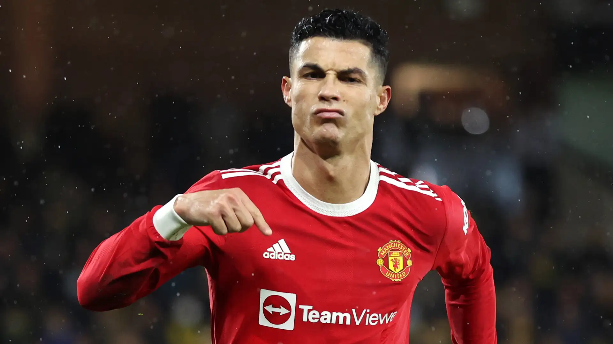
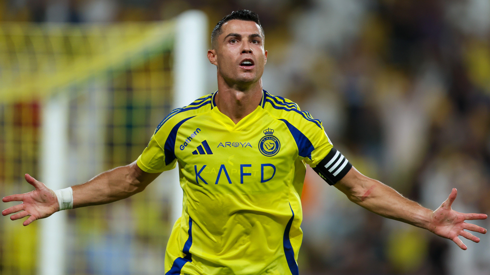
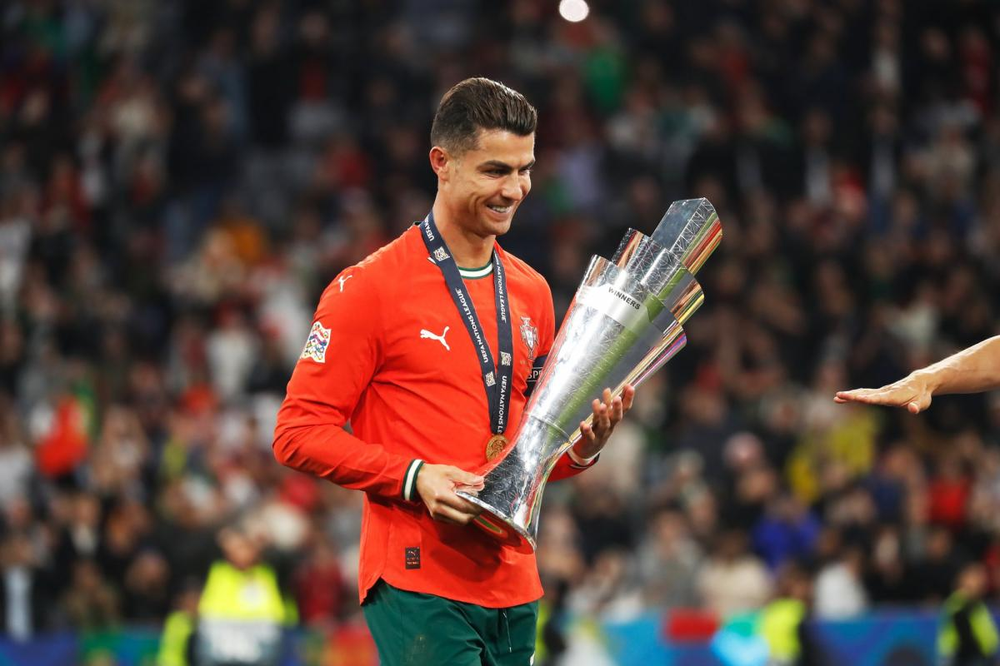

La carrière de Cristiano Ronaldo
De Madère à l'Arabie saoudite, Cristiano Ronaldo a marqué l'histoire de chaque club où il est passé. Plus de 20 ans au plus haut niveau, des records battus partout et une soif de victoire qui ne s'éteint jamais : retour sur un parcours hors du commun, club par club.
Sporting Portugal (2002-2003)

À seulement 12 ans, Cristiano quitte sa famille et son île de Madère pour rejoindre le centre de formation du Sporting, à Lisbonne. Loin des siens, il travaille sans relâche pour s'imposer parmi les meilleurs jeunes du pays.
Il joue ses premiers matchs professionnels à 17 ans. En août 2003, lors d'un match amical contre Manchester United, il fait tourner la tête des défenseurs anglais. Les joueurs de United demandent alors à Sir Alex Ferguson de le recruter immédiatement.
Manchester United (2003-2009)

À 18 ans, il hérite du mythique numéro 7, porté avant lui par George Best, Eric Cantona et David Beckham. D'abord connu pour ses dribbles, il devient au fil des saisons un buteur redoutable grâce à un travail physique intense.
Avec Manchester, il remporte trois championnats d'Angleterre d'affilée (2007, 2008, 2009), une FA Cup et la Ligue des champions 2008, où il marque de la tête en finale contre Chelsea. Cette saison-là, il inscrit 42 buts et décroche son premier Ballon d'Or.
En 2009, il rejoint le Real Madrid pour environ 94 millions d'euros, un record mondial à l'époque.
Real Madrid (2009-2018)

À Madrid, CR7 atteint une dimension légendaire. En neuf saisons, il marque 450 buts en 438 matchs, soit plus d'un but par match, et devient le meilleur buteur de l'histoire du club.
Il remporte quatre Ligues des champions (2014, 2016, 2017 et 2018), dont trois consécutives, un exploit jamais réalisé à l'ère moderne. Il ajoute deux championnats d'Espagne, deux Coupes du Roi et quatre Ballons d'Or (2013, 2014, 2016 et 2017).
Ses duels avec Lionel Messi lors des Clásicos contre le FC Barcelone restent parmi les plus grandes rivalités de l'histoire du football.
Juventus FC (2018-2021)

Quelques mois après son célèbre retourné acrobatique contre la Juventus, applaudi par les supporters adverses, il rejoint le club italien pour environ 100 millions d'euros.
En Italie, il remporte deux championnats, une Coupe d'Italie et deux Supercoupes. Il marque 101 buts en trois saisons et termine meilleur buteur de Serie A en 2021, devenant le premier joueur à finir meilleur buteur en Angleterre, en Espagne et en Italie.
Retour à Manchester United (2021-2022)

En août 2021, à 36 ans, il fait son grand retour à Old Trafford, douze ans après son départ. Les supporters l'accueillent comme un héros.
Malgré une saison difficile pour le club, il termine meilleur buteur de l'équipe avec 24 buts toutes compétitions confondues. Il quitte le club en novembre 2022, après des tensions avec l'entraîneur.
Al-Nassr FC (depuis 2023)

En janvier 2023, il rejoint Al-Nassr, en Arabie saoudite, avec l'un des contrats les plus élevés de l'histoire du sport. Son arrivée attire l'attention du monde entier sur le championnat saoudien.
Il remporte la Coupe arabe des clubs champions en 2023 et bat le record de buts sur une saison du championnat saoudien avec 35 réalisations en 2023-2024. En septembre 2024, il devient le premier joueur de l'histoire à atteindre 900 buts officiels en carrière.
Le 21 mai 2026, il offre enfin le titre de champion d'Arabie saoudite à Al-Nassr en marquant un doublé lors de la dernière journée contre Damac (4-1). C'est le premier titre de champion du club depuis 2019.
Équipe du Portugal

Il porte le maillot du Portugal pour la première fois en 2003, à 18 ans. Un an plus tard, il perd la finale de l'Euro 2004 à domicile et fond en larmes : il se promet alors de rendre son pays champion.
Promesse tenue en 2016 : malgré une blessure qui l'oblige à quitter la finale contre la France, il encourage ses coéquipiers depuis le bord du terrain jusqu'à la victoire. Il remporte ensuite la Ligue des nations en 2019 et en 2025.
Capitaine de la sélection, il détient le record du nombre de buts et de matchs en équipe nationale. Lors de la Coupe du monde 2026, il devient le premier joueur de l'histoire à marquer dans six Coupes du monde différentes, mais le Portugal est éliminé en huitièmes de finale par l'Espagne.
Le 5 novembre 2026, à 41 ans, il annonce sur Instagram sa retraite internationale, quelques semaines après un conflit avec le sélectionneur Jorge Jesus. Il quitte la sélection après 23 ans, avec 234 matchs et 146 buts, deux records dans le football masculin.